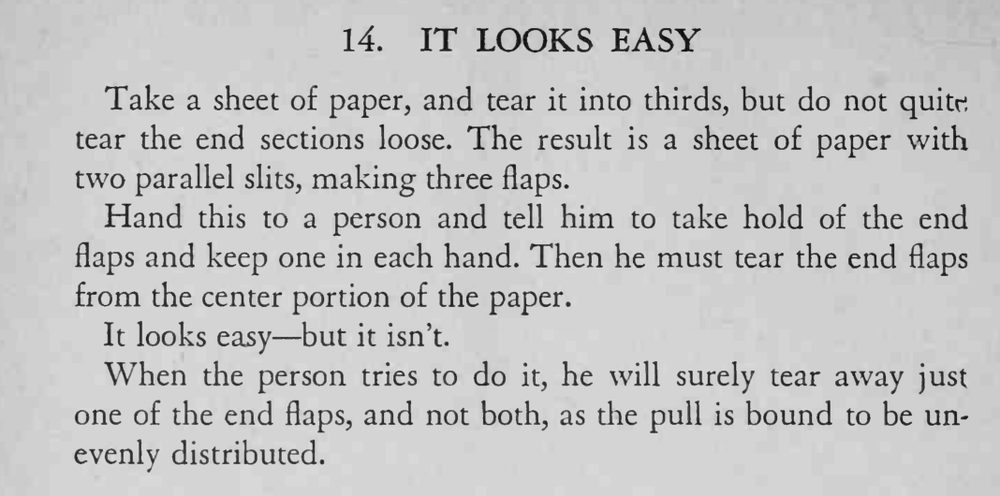

纸上撕出两条平行缝、留下三个纸条，让人抓住两端把纸边同时撕下来——看着容易，谁也做不到。
这是力学陷阱，双手用力无法绝对均匀，自己也不必去试。

Take a sheet of paper, and tear it into thirds, but do not quitr; tear the end sections loose. The result is a sheet of paper with two parallel slits, making three flaps. Hand this to a person and tell him to take hold of the end flaps and keep one in each hand. Then he must tear the end flaps from the center portion of the paper. It looks easy but it isn't. When the person tries to do it, he will surely tear away just one of the end flaps, and not both, as the pull is bound to be unevenly distributed.